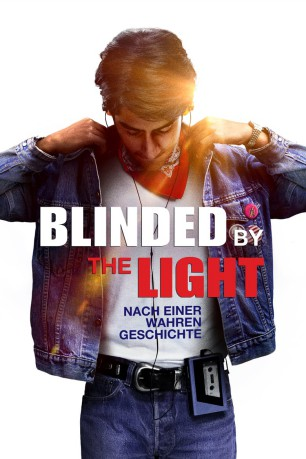

IMDB-Wertung: 6.9 / 10
IMDB-Wertung: 6.9 / 10  Metascore:
Metascore: 
Im England der 1980er Jahre findet ein Teenager pakistanischer Abstammung Rückhalt in der Musik von Bruce Springsteen.
 IMDB-Wertung: 6.9 / 10 Metascore:
Im England der 1980er Jahre findet ein Teenager pakistanischer Abstammung Rückhalt in der Musik von Bruce Springsteen.
Jahr: 2019
Dauer: 117 Minuten
FSK: 12
Land: England Studio: Warner Bros.Tonspuren: DD5.1 - , - , - ,
Untertitel:
Auflösung: 1080p (1920x1080) Größe: 4413 MB
Regisseur: Gurinder Chadha
Drehbuch: Sarfraz Manzoor, Gurinder Chadha, Paul Mayeda Berges, Sarfraz Manzoor, Bruce Springsteen
Soundtrack: A.R. Rahman
Darsteller:
 David Hayman als Mr Evans
David Hayman als Mr Evans Rob Brydon als Matt's Dad
Rob Brydon als Matt's Dad Hayley Atwell als Ms Clay
Hayley Atwell als Ms Clay Sally Phillips als Mrs Anderson
Sally Phillips als Mrs Anderson Sofia Abbasi als Local Resident (uncredited)
Sofia Abbasi als Local Resident (uncredited) Raj Awasti als Luton Herald Newspaper Reporter (uncredited)
Raj Awasti als Luton Herald Newspaper Reporter (uncredited) Nina Kumar als Wedding Guest (uncredited)
Nina Kumar als Wedding Guest (uncredited) Martyn Mayger als Protester (uncredited)
Martyn Mayger als Protester (uncredited) Bharat Mistri als Wedding Guest (uncredited)
Bharat Mistri als Wedding Guest (uncredited) Jag Patel als Luton Town Visitor (uncredited)
Jag Patel als Luton Town Visitor (uncredited) Stephen Samson als Riot Officer (uncredited)
Stephen Samson als Riot Officer (uncredited) Atul Sharma als Wedding Guest (uncredited)
Atul Sharma als Wedding Guest (uncredited)Datei: X:\2019(A-F)\Blinded by the Light (2019, FSK12, 1920x1080).mkv seit 01.11.2019
Festplatte: HD 2018(G-Z)-2019(A-Z)
 Es gibt insgesamt 60 Filme in der Gruppe '2019(A-F)'
Es gibt insgesamt 60 Filme in der Gruppe '2019(A-F)'